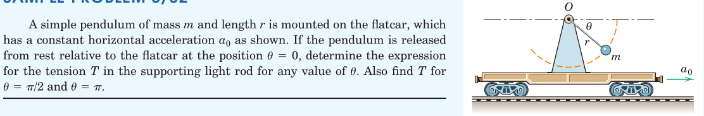
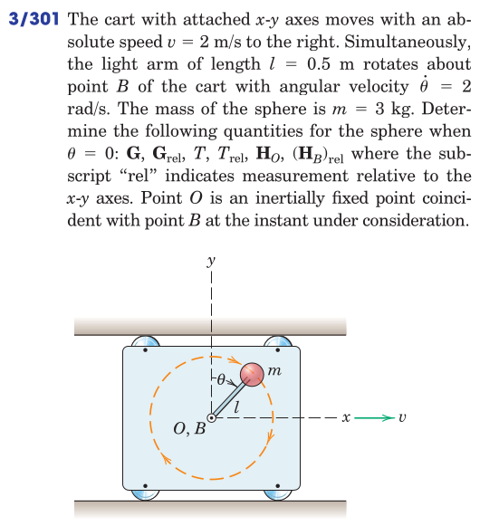
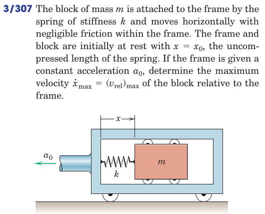
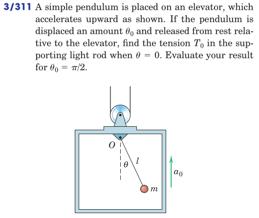

Are we really operating on a fixed reference frame?
What is an astronomical frame of reference, does is exist?
[a freehand depiction of earth’s rotation around the sun and the our rotation about the globe’s axis]
Everthing is in relative motion.
[a freehand picture of a mass moving with respect to a frame of reference in motion]
\[ \boldsymbol{a}_A = \boldsymbol{a}_B + \boldsymbol{a}_\mathrm{rel} \]
If the acceleration of the moving coordinate system can be neglected, i.e., \(\boldsymbol{a}_B < \boldsymbol{a}_\mathrm{rel}\) then
\[ \boldsymbol{a}_A \approx \boldsymbol{a}_\mathrm{rel} \]
The linear momentum of mass \[ \boldsymbol{G} = m\boldsymbol{v}_A = m (\boldsymbol{v}_B + \boldsymbol{v}_\mathrm{rel}) \]
The rate of change of linear momentum \[ \dot{\boldsymbol{G}} = m \dot{\boldsymbol{v}}_A = m ({\dot{\boldsymbol{v}}_B} + \dot{\boldsymbol{v}}_\mathrm{rel}) \approx m \dot{\boldsymbol{v}}_\mathrm{rel} \]
Same is true for the angular momentum \[ \dot{\boldsymbol{H}_O} = \boldsymbol{r} \times m ({\dot{\boldsymbol{v}}_B} + \dot{\boldsymbol{v}}_\mathrm{rel}) \approx \boldsymbol{r} \times m \dot{\boldsymbol{v}}_\mathrm{rel} \]
The expression of the impulse-linear momentum
is valid in the moving frame!!
Similarly the angular impulse-momentum expression \[ \boldsymbol{r}_\mathrm{rel1} \times m \boldsymbol{v}_{\mathrm{rel}1} + \int_i \boldsymbol{r}_\mathrm{rel} \times \boldsymbol{F}_i dt = \boldsymbol{r}_\mathrm{rel2} \times m \boldsymbol{v}_{\mathrm{rel}2} \] is valid in the moving frame!!




From Hibbeler, Engineering Mechanics: Dynamics: Chapter 15: